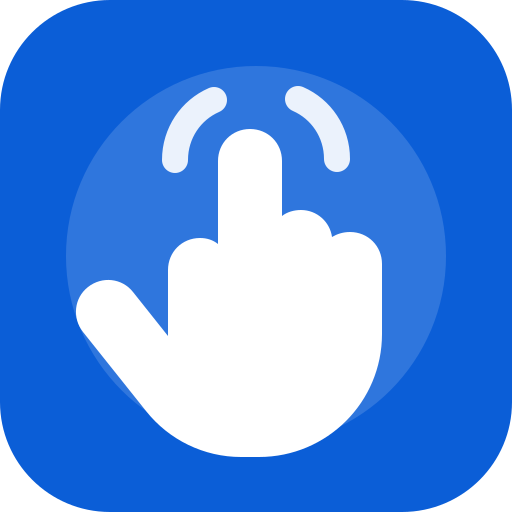

<<<
Ingreso al sistema de reconocimiento de señas.
Ingreso al sistema de reconocimiento de señas.
Manos que Hablan
Traductor básico de gestos de mano a texto y voz.
Presiona iniciar cámara
Seña detectada
Esperando...
Confianza: 0%
Grabar nuevas señas para entrenar
Esta función captura fotos de la seña y las organiza en un archivo ZIP. Luego ese ZIP se usa en Google Colab para entrenar un modelo propio.
Muestras capturadas: 0
Gestos disponibles
- ✋ Palma abierta: “Hola”
- ✊ Puño cerrado: “Necesito ayuda”
- 👍 Pulgar arriba: “Estoy bien”
- 👎 Pulgar abajo: “No estoy bien”
- ☝️ Dedo índice: “Tengo una pregunta”
- ✌️ Victoria: “Gracias”
- 🤟 Te quiero: “Te quiero”
Esta versión reconoce gestos básicos. Para señas colombianas reales se debe entrenar un modelo propio.